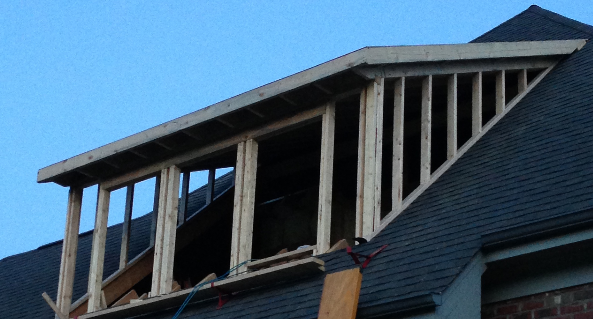

About Us
Mission Statement
Our mission is to provide the greater Raleigh-Durham area with premium construction service for all residential and commercial needs. We strive for the highest-quality workmanship possible, and we do this through the integrity of our contractors and other staff, as well as through our commitment to our strong work ethic and passion for the newest innovations of the industry. We maintain the highest level of professionalism, honesty, and fairness in our relationships with clients, employees, and vendors.
Our Story
Property Pros LLC was founded in 2010 by Jon Gross, a now small-business owner, husband, and father of two. We started out working on solely commercial projects, but with the circumstances of the COVID-19 pandemic in 2020, we expanded our services to residential as well, as there was a higher demand for residential services. We are headquartered in Apex, North Carolina and employ over 25 professional subcontractors, hence our name Property Pros. Our services are available to surrounding areas, including Apex, Cary, Raleigh, Durham, Chapel Hill, and others. We have been serving cities of North Carolina for over 11 years now, and strive to provide the best experience possible.